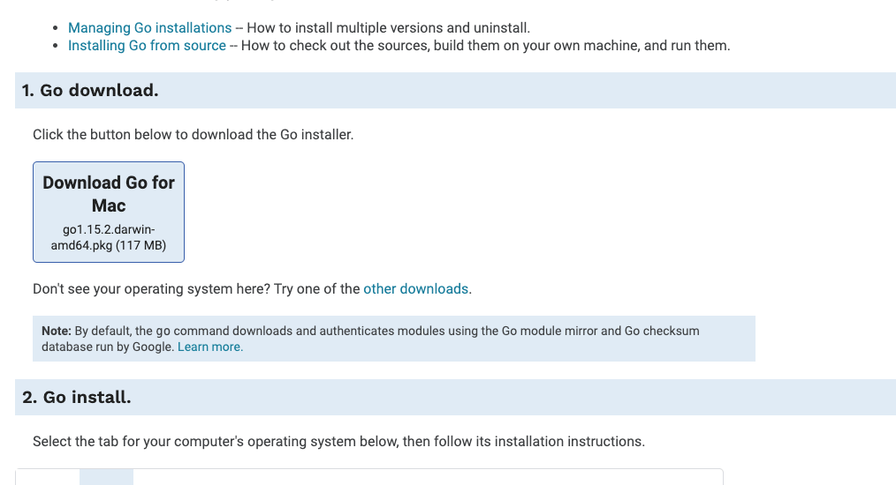
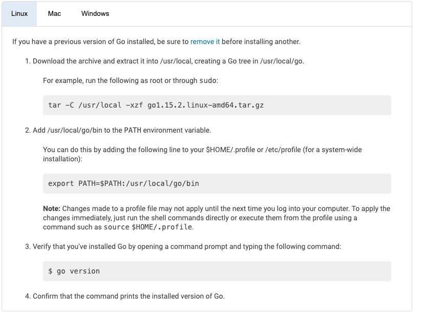
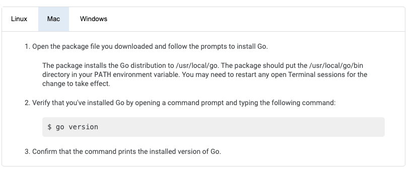
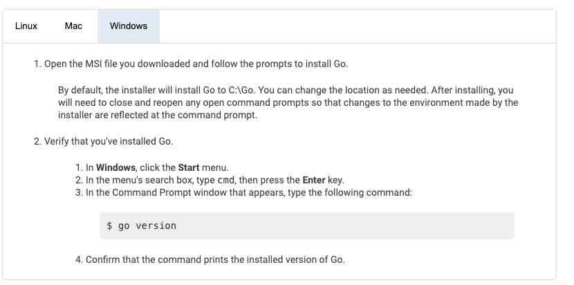

Goのインストールが楽すぎた話

環境構築がいつも面倒くさくて、実際にローカルで開発を始めるまでに毎回時間がかかるので新しい言語を始める時躊躇われることが多いです。そう思いつつもGoを始めてみたところ、かなり環境構築が楽でした。その時の話を少ししていきます。
インストールをしていく際は、こちらのサイトを参照されたい。
https://golang.org/doc/install
インストーラのダウンロード
まずは、上に示していたhttps://golang.org/doc/installにアクセスします。
すると、最上部にダウンロードの手順が示されており以下のようになっています。
- Go donwload.
- Go install.
- Go code.
最初の手順としてインストーラのダウンロードを行います。

上の画像をのように、画面は開いているPCのOSに合わせて適したインストーラがダウンロードできるようになっています。
私の場合は、Macから触っているのでMac用ダウンロードになっています。
こちらをクリックしてダウンロードします。
インストールする
続いて、インストールをします。先ほどダウンロードしたものがインストーラなのでそれを立ち上げてインストールを開始します。
インストール画面が出たら、特に何も設定せずに、次へと進んでいって大丈夫です。
PATHは勝手に通してくれるみたいです。
ちなみに、公式にはこのようなことが説明に書いてあります。
Linux

Mac

Windows

とりあえず、Macでしかインストールを試していないのでMacを前提にこの記事を進めさせていただきますね。
インストールできたら、ターミナルを開きます。（or 開きなおします）
そこで、go versionとコマンドを打ってみましょう。
$ go version
結果は以下が得られるはずです(10/5現在)
$ go version
go version go1.15.2 darwin/amd64
go versionがエラーで表示されない
PATHが通っていないことが考えられます。
そこで解決策を二つ提示します。
- ターミナルを開き直す
- PATHを明示的に通す
ターミナルを開き直す
ターミナルを開きなおして、インストールの設定が完了した状態にしましょう。
これでもダメなら次へ行きます。
PATHを明示的に通す
一応デフォルトでPATHが通るはずですが、通らないこともあると思うので、明示的にPATHを通してみます。
ターミナルでPATHを通しましょう。
$ export PATH=$PATH:/usr/local/go/bin
とりあえず、これでPATHが通ればうまくいくはずです。
......
これでもダメならインストールしなおせばうまくいくんじゃないかな...(暴論)
まとめ
これでGoのインストールが完了したはずです。
インストール自体に時間が割かれることが多い印象ですが、この言語はインストールも早く、かなり高速で言語をローカルで触る環境が整うといった印象でした。
書き方もかなり使い易くて、静的型付言語の煩わしさを取っ払ったような感じがしました。(感じがしただけで実際まだよくわからないww)
ちょっと面白そうな感じだったので、深掘りして学んでみてWeb APIでもあとで作ってみようかなと思います。
それではGoのインストールはここまでです。